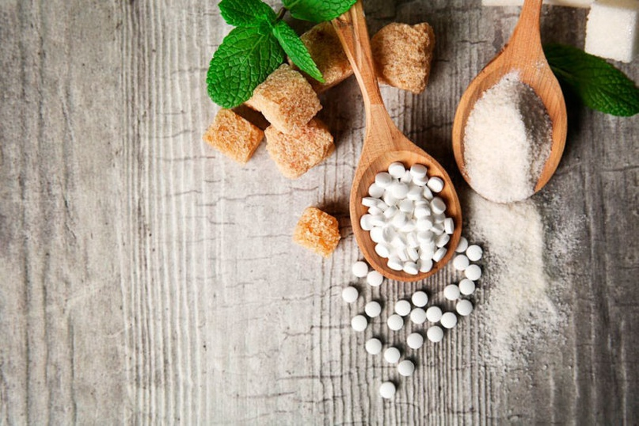
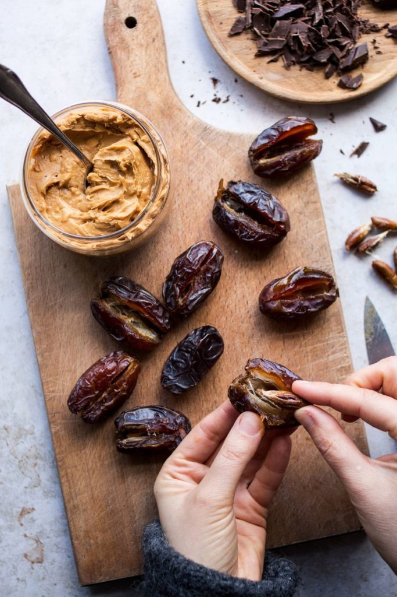

САХАРОЗАМЕНИТЕЛИ
Если вы пришли к решению исключить сахар из своего рациона, то у вас наверняка возникал вопрос о возможности замены сахара на сахарозаменители. Менее вредно ли это? Смогу ли я похудеть, заменив сахар на сахарозаменители? На эти и другие вопросы мы ответим в сегодняшнем посте.
САХАРОЗАМЕНИТЕЛИ И ПОДСЛАСТИТЕЛИ
Сахарозаменители — это вещества, имеющие близкую к сахару калорийность и участвующие в метаболизме. К ним относятся фруктоза, изомальтоза и ксилит.
Подсластители — это вещества, которые имеют нулевую калорийность и в энергетическом обмене не участвуют. К таким веществам относят сахарин, цикламат, аспартам, сукралозу и стевиозид.
Преимущество сахарозаменителей перед сахаром заключается в том, что они медленнее усваиваются, имеют более низкий гликемический индекс. Но если вы хотите сбросить вес, то сахарозаменитили – не лучший выбор, потому что калорий в них ничуть не меньше, чем в сахаре.
САМЫЕ ПОПУЛЯРНЫЕ САХАРОЗАМЕНИТЕЛИ
Фруктоза. Природный сахар, содержащийся в овощах, фруктах и меде. Она обладает большей сладостью и немногим меньшей калорийностью по сравнению с сахаром.
Изомальтоза. Сложный углевод с очень долгой скоростью усвоения в организме, но вкус лишь слегка сладковатый, а значит для достижения желаемого вкуса ее потребуется много.
Ксилит. Натуральный древесный сахар или березовый сахар, содержащийся во многих фруктах и овощах. Кстати, наш организм производит до 15г ксилита в день во время обмена веществ. И именно его используют в жевательных резинках без сахара.
Все сахарозаменители относительно безвредны, так как имеют натуральное происхождение. Минусы у сахарозаменителей почти такие же, как и у простого сахара: боль в животе, проблемы с кожей и повышение аппетита. Ну и конечно, высокая калорийность!
САМЫЕ ПОПУЛЯРНЫЕ ПОДСЛАСТИТЕЛИ
Сахарин (E954). Часто применяется в составе диабетических продуктов. И хоть он имеет низкую калорийность, доказано, что сахарин снижает сжигание калорий и повышает аппетит.
Аспартам (E951). При нагревании теряет сладость, поэтому его нельзя использовать в выпечку и горячий чай. Его добавляют в газировку без сахара, и именно от него в ней эффект постоянной жажды.
Цикламат (E952). Не усваивается организмом большинства людей, но при расщеплении может быть токсичен и повышает действие других канцерогенов.
Стевиозид (E960). Этот подсластитель получают из экстракта растения стевии.
Сукралоза (E955). По сути это переработанный сахар, но сукралоза слаще в 600 раз! Но и есть после нее хочется также сильно.
У подсластителей из плюсов – только чуть меньшее число калорий калорий. А вот минусов очень много: почти все подсластители, вызывают дисбактериоз. Отсюда боли в животе, проблемы с кожей, повышенный аппетит. Да, и к стевии это тоже относится.
Подсластители и заменители сахара не избавляют от тяги к быстрым углеводам, а лишь повышают ее. Чувствуя сладость, но не получая ожидаемую глюкозу, организм начинает испытывать углеводное голодание, а в результате — заметное повышение аппетита. «Добирать» калории приходится другими продуктами.
Если у вас нет медицинских противопоказаний к употреблению сахара, то лучше отказаться от сахарозаменителей и подсластителей: если в них и меньше калорий, то вред организму наносится бОльший.
Конечно, мы не предлагаем питаться кексами и пирожными с белым сахаром в составе. Но пара долек горького шоколада, натуральная пастила, бананы, финики, сухофрукты и мёд не принесут вреда вашему здоровью, поэтому не стоит заменять их на продукты с сахарозаменителями и подсластителями. И конечно, с такими «правильными» сладкими продуктами нужно знать меру и не переедать.